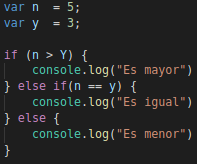

Aplicando JavaScript a un problema
Para resolver nuestro problemas en JavaScript (y en cualquier otro lenguaje) es recomendable que hagamos un diagrama de flujo. Esto no ayudará a ver las posibles soluciones que le podemos dar a un problema. Para poder pasarlo a JavaScript utilizaremos condicionales.
Para comprobar si una condición se cumple utilizaremos in, else if, else…
Y para comparar valores utilizaremos == 0 ≡ (valor, y valor y tipo respectivamente), && (and), || (or), <, > , <= y >=
